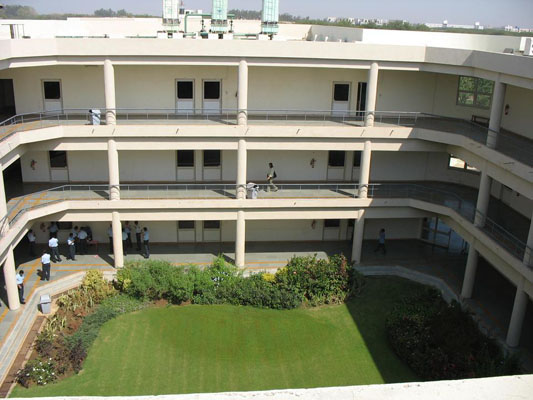
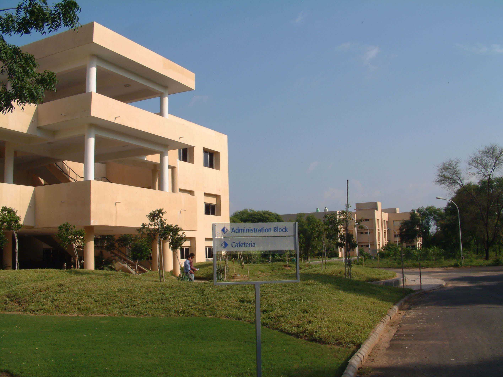
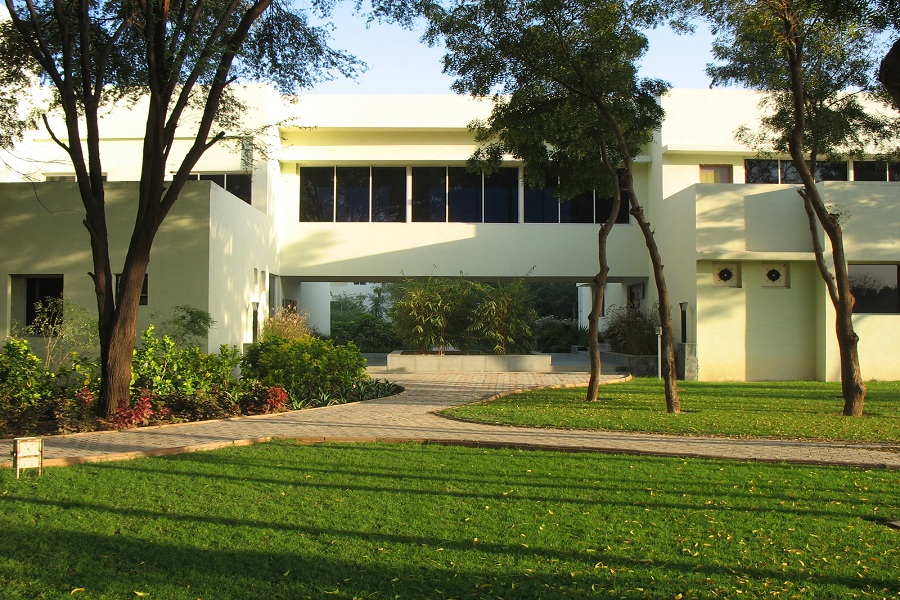
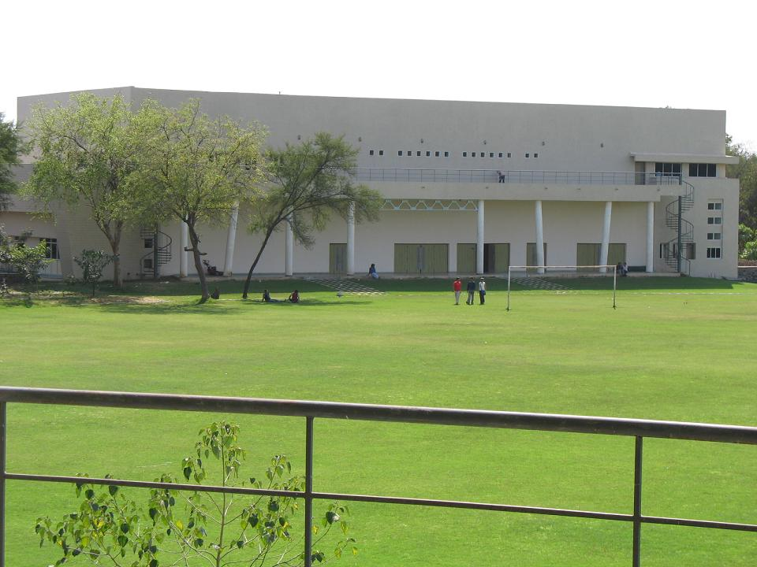

Laboratory
More than 1200 nodes connected via 100 Mbit/s switches and a 1 Gbit/s fiber backbone form the superstructure of the network. Each computer is at least a Pentium IV multi OS, fully connected terminal. Thus ensuring that there is at least one high-end computer available to each student and faculty on the campus.
The laboratory building houses teaching and research laboratories for electronics, communications, computers and networks. More than 800 computers are installed in these laboratories. Students use resources of laboratories (open until midnight) to solve problems, perform developmental experiments and work on projects guided by faculty.
By granting 24 hours lab facility and access to the network from each classroom and lecture theater information is made easily accessible from any point on campus. The students are provided a 16 Mbit/s line for their hostel rooms.
Hostel

There are two residence halls, one for men and one for women. The men's hall has eight wings labelled A to H. Each wing has about 60 rooms. The total capacity of the eight wings is about 900 students on twin sharing basis.
The women's hall has two wings, the J and K wings, with a capacity of 195 residents. The women's hall has a guest room for mothers of residents. For students using their own computers in the room, internet facility is provided at a per-semester charge.
Hot water (using solar panels), laundry (dhobis come to collect and deliver clothes) and TV rooms with Dish TV are available at both halls of residence. A convenience store, local/STD/ISD facility and student warehouse are available at the men's hall of residence.
Residence at the halls is compulsory for B.Tech. students. Male postgraduate students are provided rooms subject to availability. All female post-graduate students, who choose to stay on campus, can be provided accommodation in the women's hall of residence.
Continuing Education Program
CEP - Continuing Education Program is a special tailor made course that is created on request and in concurrence with our clients from Government, Industry or Social Organization. It is also possible that DA IICT Faculty will offer a program based on their skills and as a response to market needs.
DA-IICT has ICT as its core competency and therefore we will be providing courses that add value to or support the ICT knowledge and enhance the business of your organization.
Besides the excellent faculty we have a beautiful campus with a well established infrastructure available where we can provide hands-on sessions, besides theory sessions.
Resource Centre
DAIICT Resource centre have various kind of book related to information technology,electronics, mathematics, science, economics, environment etc. and Daiict has Digital Resource centre of CDs and DVDs.There are many magazine also subscribed.
Student Activity Centre
The Sports and Cultural Complex has facilities for outdoor sports such as cricket, football, basketball, volleyball and indoor games like badminton, table tennis, chess and carom. It has a gymnasium and a music room.